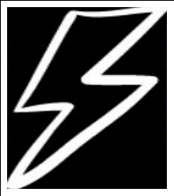
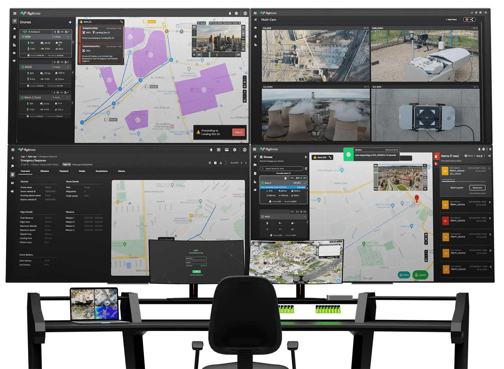
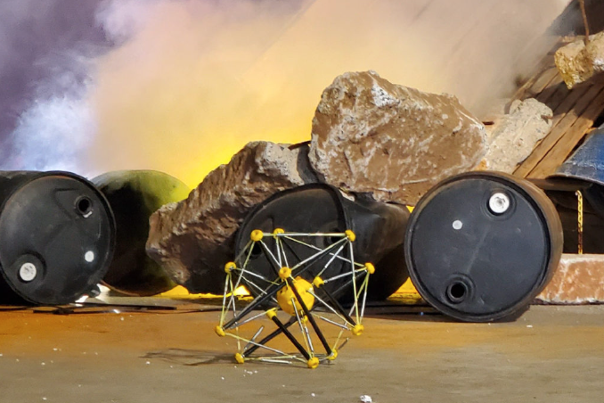

Roboticist | Software Enthusiast | F1 Fanatic
Technology has automated and eased into our lives as a dependent shoulder. From self-driving cars to home robotic machines, we are accosted and comforted by our need for technology in the smooth execution of our daily tasks. Amongst the varied technologies, Robotics in particular has always piqued my interest. I believe that great things can only be achieved through the collaborative efforts of like minds. As such, I envision myself on an entrepreneurial track, inspired by the endeavors of visionaries such as Elon Musk and Steve Jobs, to revolutionize the field of robotics and UAVs through autonomy and AI.
At my heart, I am a roboticist with experience in Motion planning and Autonomous navigation, Advanced control systems, System Integration and design and Rapid prototyping,. Excellent analytical, problem-solving, communication, team and leadership skills with strong numeracy and sense of urgency.

Ignite Labs
Robotics Engineer | August 2020 - June 2021
Ignite Labs had been battling COVID-19 since the very start and had made it their mission to cater to the pandemic situation by helping the personnel at the frontline through various technical innovations. During my tenure at Ignite Labs, I passionately contributed to socially relevant projects, particularly those addressing challenges of the COVID-19 pandemic. My involvement ranged from conceptualizing to deploying robots that significantly reduced frontline workers’ exposure risks. This experience not only honed my technical and leadership abilities but also deeply fulfilled my aspiration to create technologies for a better standard of living and dependable societal solutions.

Flytbase Labs
Robotics Engineer | June 2022 - June 2023
As a Robotics Engineer at Flytbase Labs, a leading drone autonomy service provider in San Jose, California, I played a pivotal role in advancing drone technology. My expertise in software programming and modular testing was instrumental in enhancing algorithm scalability and reusability. I led the development of vital features, such as precise drone ETA calculations and the creation of a global drone monitoring and control system. A highlight of my tenure was spearheading a major technical initiative to integrate an autonomous commercial collision avoidance system with an Unmanned Aircraft Traffic Management (UTM) system, significantly elevating operational safety standards for unmanned aerial systems. My leadership extended to directing a team of six engineers in architecting a Python-based async microservices codebase, contributing to a scalable platform capable of supporting up to 1 million users globally. Additionally, I successfully built and managed VPC networks on AWS, increasing drone simulation system efficiency by 80%. My work also included developing an advanced wrapper for the DJI SDK, facilitating autonomous UAV operations in over 25 countries, and incorporating ADS-B monitoring with FlytNow dashboard APIs. This experience solidified my ability to handle enterprise-scale projects and drive technological innovation in unmanned aerial systems.

Squishy Robotics
Robotics Software Engineer | September 2023 - Present
Squishy Robotics specializes in sensor robots air-deployed into danger zones to provide real-time, ground-level data. At Squishy Robotics, my engineering expertise significantly advanced the energy efficiency of tensegrity robots, tailored for navigation in rough terrains. I spearheaded the development of adaptable, energy-efficient control strategies using Python, Keras, and TensorFlow. These strategies dynamically adjust to environmental changes and path variations, enhancing the robot’s functionality in hazardous areas.